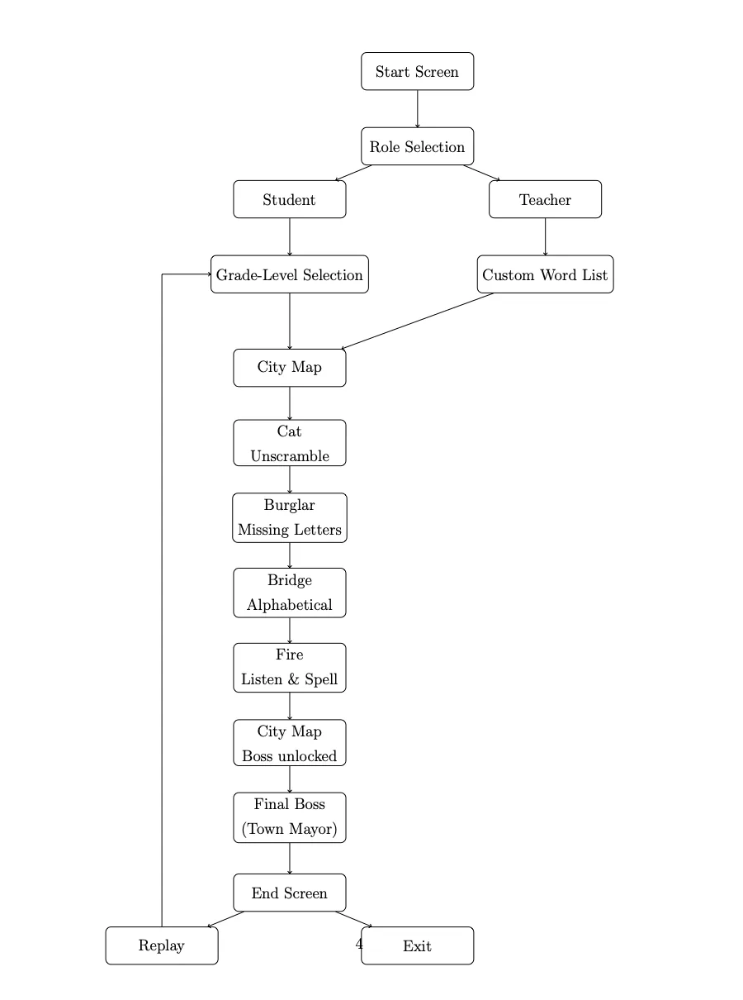
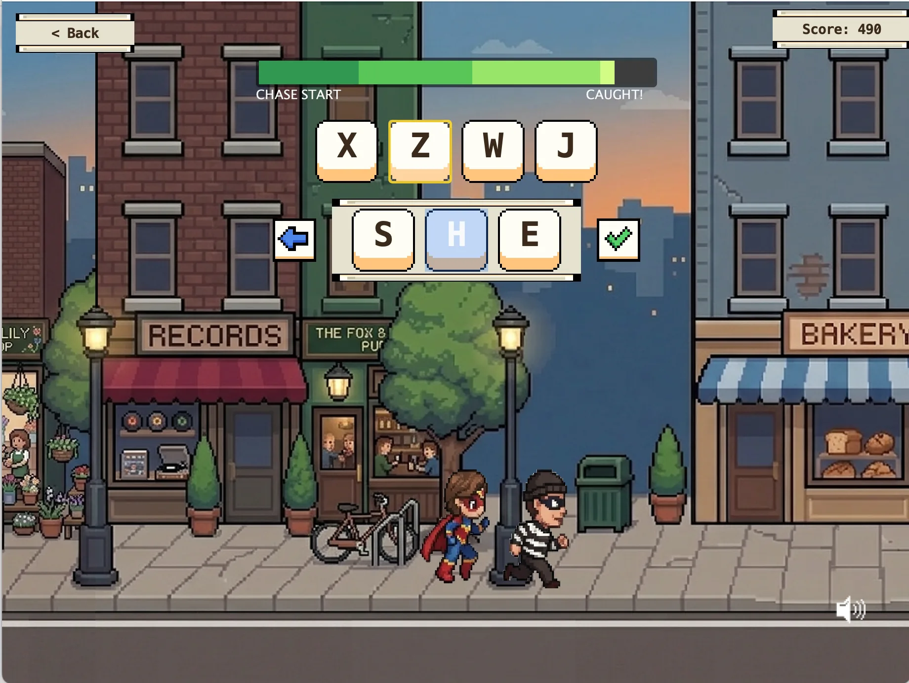
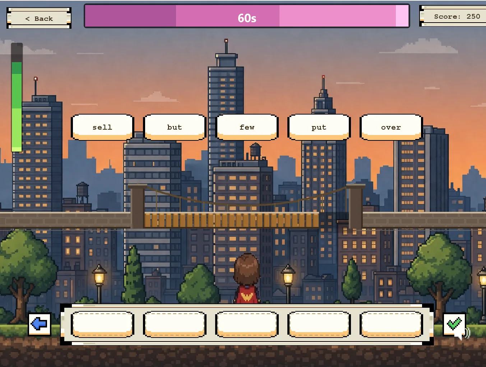
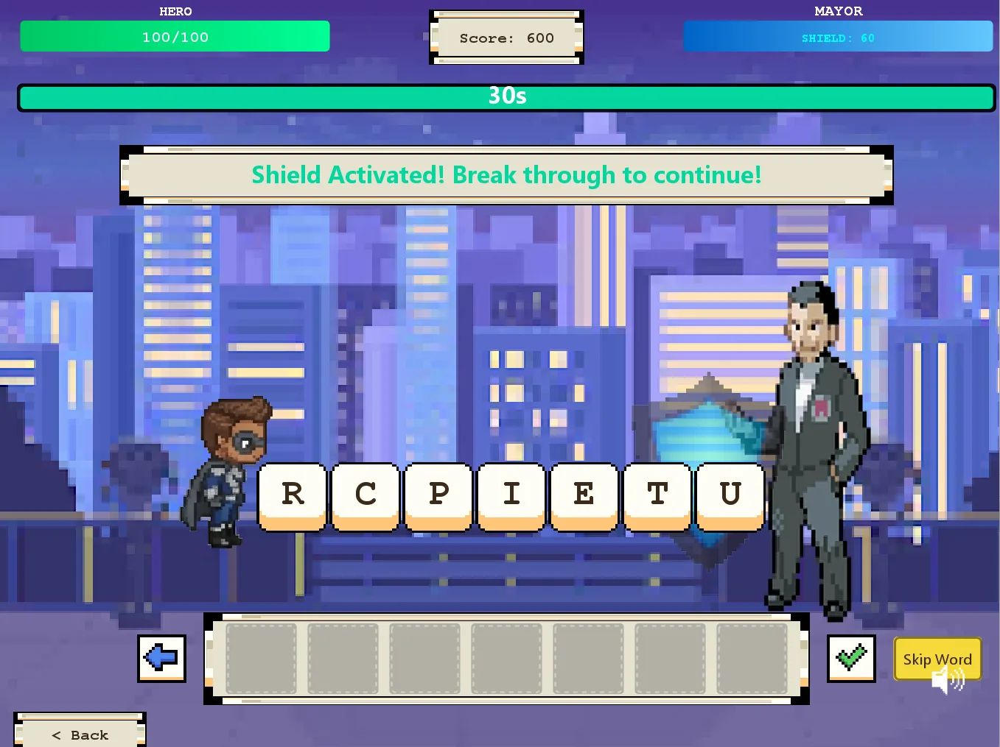
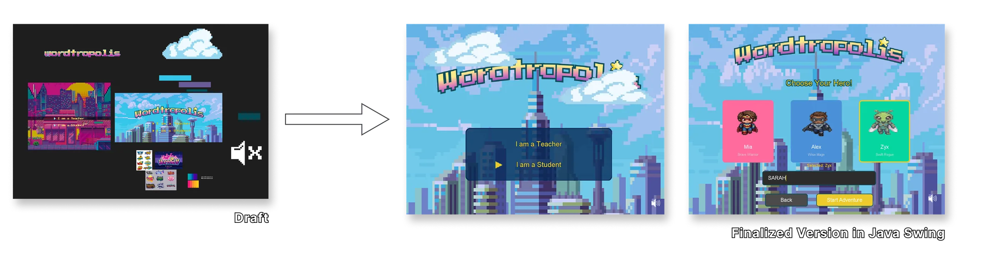

Wordtropolis
A spelling game for young learners that turns practice into missions and boss battles. On a team of six, I set the game's visual direction, built the first mission as the reference for everyone else, and kept the whole game consistent.
- Role
- Visual direction and UI consistency
- Timeline
- 12 weeks
- Team
- 6 people, university HCI course
- Tools
- Figma, Java Swing
Problem
The original game delivered words, but gave kids no reason to keep going.
Before redesigning anything, we evaluated the original spelling tool and found three failure points.
- Low engagementIt prioritized delivering content over motivation and reward.
- RepetitiveThe same static activities, with no sense of progress, story or challenge.
- Unclear feedbackKids didn't know what to do next or whether their answer was right.
Principles
Three ideas from learning science, one for each failure point.
- Intrinsic motivationKids engage more when the challenge feels meaningful.Answers low engagement.
- Spaced repetitionReturning to hard words at the right intervals improves retention.Answers repetitive practice.
- Multi-sensory feedbackVisual and audio feedback together speed up learning.Answers unclear feedback.
Game structure
Missions are the practice. The boss battle is the mastery check.
The team designed the progression before any visual decisions. Kids pick their grade level, then choose missions on a city map. Each mission is a different kind of spelling practice: unscrambling, missing letters, alphabetical order, and listen-and-spell. Clearing them unlocks the final boss.
Teachers enter through their own path and can set a custom word list, so the same game works with what the class is actually learning.

Why missions
A city of missions turns a flat list of activities into a journey with a visible goal, which is what the original game was missing.
My role
I set the look, built the first mission as a reference, and kept six people's work consistent.
- Set the toneI found the pixel art the game is built from, which set its overall look and feel.
- Built the referenceI built the cat-in-the-tree mission first, to show how characters, items and word blocks should be placed. The team reviewed it and agreed on it as the standard.
- Kept it consistentAs teammates built the other missions, I made sure everyone used the same colour scheme, layouts and word blocks, so five builders' screens read as one game.
Key decisions
Visible goals, difficulty that adapts, and feedback kids can see and hear.
- Mission progressionLearning is structured around visible goals and milestones, so kids can see how far they've come.
- Rising difficultyThe game gets harder each time a kid finishes a round. Words they got wrong come back until they get them right, and then harder words appear.
- Multi-sensory feedbackVisual celebrations and audio cues on correct answers, plus a timer and score so kids always know where they stand.



Build
A working game, not a mockup, so pacing could be tried for real.
We drafted the experience in Figma and built it in Java Swing, so pacing, feedback timing and difficulty could be played rather than imagined. These were judgments made by the team while playing it ourselves; we never tested it with children.

Outcome
Presented to the class and graded well, but never tested with children.
- ShippedA fully playable game with four mission types, rising difficulty and multi-sensory feedback.
- EvaluatedPresented to the whole class and graded by the TAs and professor, earning a strong grade.
- Not yetTested with children, the actual users.
Reflection
A tight timeline taught me to decide quickly and defend it clearly.
With more time, I would have explored more advanced adaptive features and, most importantly, tested with children directly.